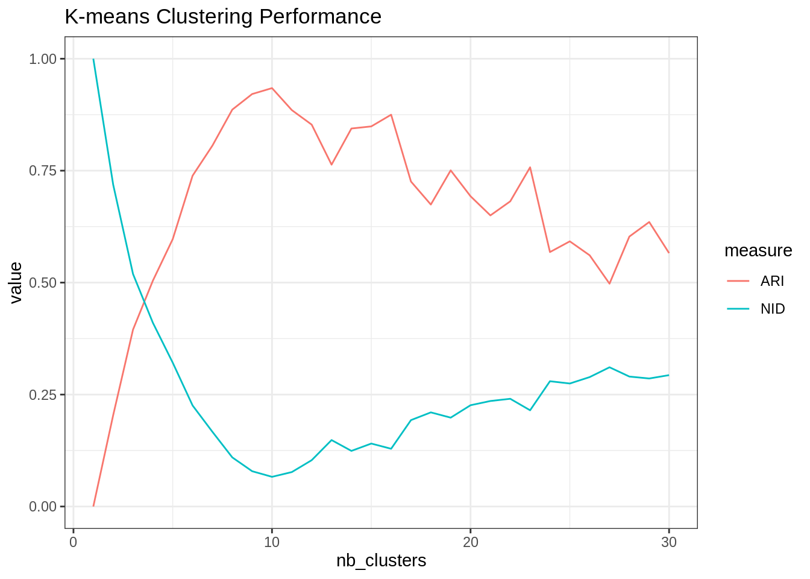
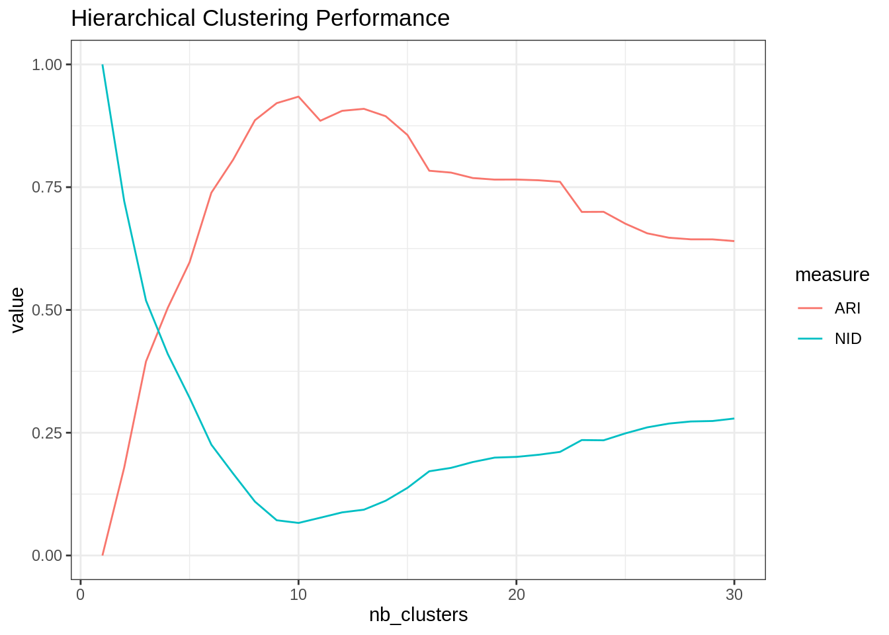
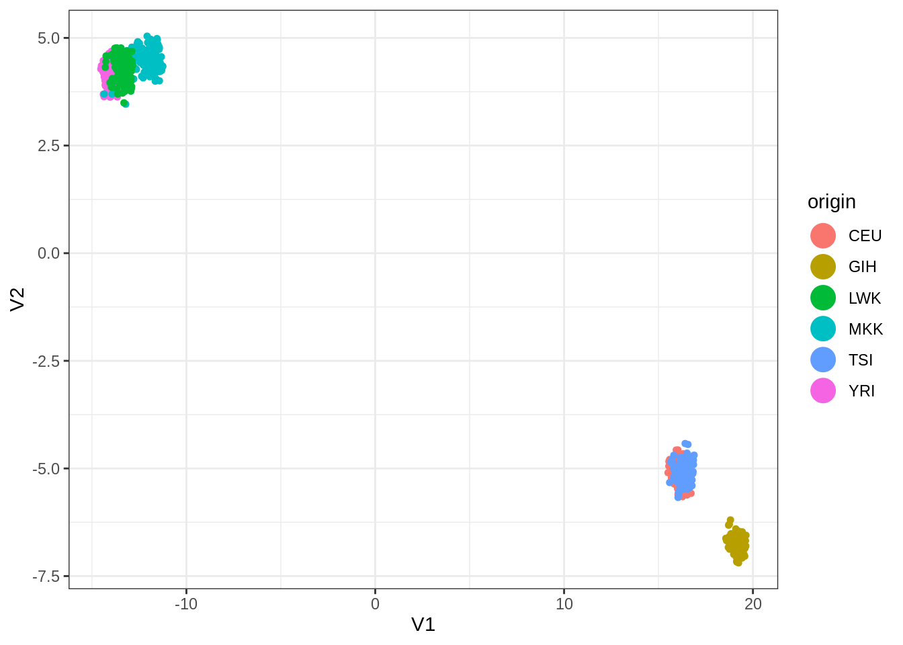
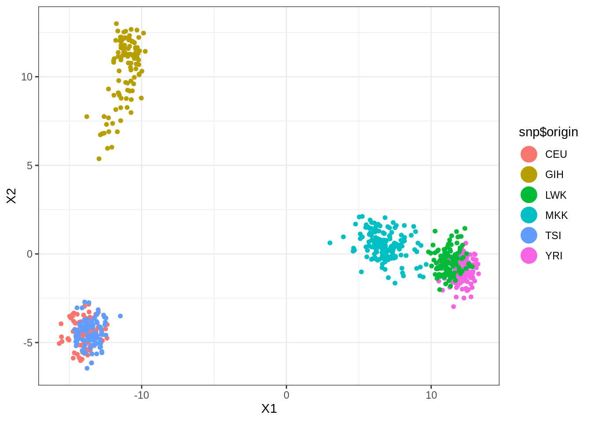

Tutorial: distance-based clustering
MAP573 team
11/03/2020
Preliminaries
Package requirements
We start by loading a couple of packages for data manipulation, dimension reduction clustering, fancy representations, etc.
library(tidyverse) # opinionated collection of packages for data manipulation
library(aricode) # fast computation of clustering measures
theme_set(theme_bw()) # plots themesClustering of a series of data sets
scRNA data
We start with the sample of scRNA data presented during the course on non-linear dimension reduction approaches. It consists in the normalized gene-level expression of 100 representative genes for a collection of 301 cells spread in 11 cell-lines.
Data Importation
The data are imported as follows:
load("data/scRNA.RData")
scRNA <- pollen$data %>% t() %>% as_tibble() %>%
add_column(cell_type = pollen$celltypes)Questions
- Run the k-means algorithm (function
kmeans) for 11 clusters a hundred of time and keep track of the within sum of squares.
We replicate 100 runs of the kmeans with a single start:
scRNA_matrix <- scRNA %>% select(-cell_type) %>% as.matrix()
kmeans_out <- replicate(100, kmeans(scRNA_matrix, centers = 11, nstart = 1), simplify = FALSE)- Compare the total WSS for each run, and then for each each cluster (with e.g. boxplot). Comment.
Overall, there can be a variation of up to 50% of the total sum of squares for different initialization of the kmeans:
data.frame(WSS = map_dbl(kmeans_out, "tot.withinss"), run = as.character(1:100)) %>%
ggplot() + aes(y = WSS/max(WSS)) + geom_boxplot() + ggtitle("Variation of the rescaled Total sum of squares")
At the cluster level, one can see that some clusters are a bit more stable (unstable) than others, probably with individual at the boundary, more difficult to affect to a given group.
map(kmeans_out, "withinss") %>% # tranformation to a named data frame/tibble
do.call("rbind", .) %>% as_tibble() %>% setNames(paste0("cluster", 1:11)) %>%
pivot_longer(everything(), names_to = "cluster", values_to = "WSS") %>%
ggplot() + aes(x = cluster, y = WSS) + geom_boxplot() + ggtitle("Within sum of squares per cluster")
- Run the k-means for a varying number of clusters (say, between 1 and 20) with the parameter
nstartset to 20. Save the results.
map of any other apply-like functional is your friend ! We go up to 30 clusters and make 50 restart for each run, in order to get rather smooth ARI/NID curves:
nb_clusters <- 1:30
kmeans_var_cluster <- map(nb_clusters, ~kmeans(scRNA_matrix, centers = ., nstart = 50))- Compare the clusterings obtained with the corresponding cell-lines in terms of ARI and NID (use the pakage aricode).
A consensus appear around 10 clusters: note that the curves are not perfectly smooth, partly due to convergence of the k-means algorithm to local minima.
ARI <- map(kmeans_var_cluster, "cluster") %>% # extract the clusterings
map_dbl(aricode::ARI, scRNA$cell_type) ## compute the ARI
NID <- map(kmeans_var_cluster, "cluster") %>% # extract the clusterings
map_dbl(aricode::NID, scRNA$cell_type) ## compute the ARI
tibble(ARI = ARI, NID = NID, nb_clusters = nb_clusters) %>%
pivot_longer(-nb_clusters, values_to = "value", names_to = "measure") %>%
group_by(measure) %>%
ggplot() + aes(x = nb_clusters, y = value, color = measure) + geom_line() +
ggtitle("K-means Clustering Performance")
- Same question as 3-4 with the hierarchical clustering with Ward aggregation criterion (function
hclust+cutree).
Alright then, hclust + cutree with Ward criterion do a similar job to the k-means:
hclust_var_cluster <- dist(scRNA_matrix, method = "euclidean") %>% hclust(method = "ward.D2")
ARI <- cutree(hclust_var_cluster, nb_clusters) %>% apply(2, ARI, scRNA$cell_type)
NID <- cutree(hclust_var_cluster, nb_clusters) %>% apply(2, NID, scRNA$cell_type)
tibble(ARI = ARI, NID = NID, nb_clusters = nb_clusters) %>%
pivot_longer(-nb_clusters, values_to = "value", names_to = "measure") %>%
group_by(measure) %>%
ggplot() + aes(x = nb_clusters, y = value, color = measure) + geom_line() +
ggtitle("Hierarchical Clustering Performance")
SNP data: genotyping of various populations
We use the SNP data studied during homework #3. We analyze the 5500 most variant SNP for 728 individuals with various origin, with the following descriptors:
- CEU: Utah residents with Northern and Western European ancestry from the CEPH collection
- GIH: Gujarati Indians in Houston, Texas
- LWK: Luhya in Webuye, Kenya
- MKK: Maasai in Kinyawa, Kenya
- TSI: Toscani in Italia
- YRI: Yoruba in Ibadan, Nigeria
Data Importation
The data are imported as follows:
load("data/SNP.RData")
snp <- data$Geno %>% as_tibble() %>% replace(is.na(.), 0) %>%
add_column(origin = data$origin, .before = 1) Questions
Try the various algorithms seen during the course (kmeans, hierarchical clustering, spectral clustering, kernel versions), possibly with a step of dimension reduction first (e.g. PCA, t-SNE, UMAP). Try to get the best result in terms of ARI/NID compared to the natural classification (the origin of the population). If you have time, assess the robustness of your result in terms of ARI by performing resampling in the initial table snp (i.e., by running the analysis several times on a random subsample of your data, say 80%, and then averaging your results in terms of ARI).
A generally good baseline is hierarchical clustering (to chose visually the number of cluster) + k-means. In this case, they gave similar results:
hclust_snp <- dist(select(snp, -origin)) %>% hclust(, method = "ward.D2")
ARI_hc <- cutree(hclust_snp, 1:20) %>% apply(2, ARI, snp$origin)
kmeans_snp <- kmeans(select(snp, -origin), centers = which.max(ARI_hc), nstart = 20)
ARI_km <- ARI(kmeans_snp$cluster, snp$origin)
cat("\nHierarchical clustering: ", max(ARI_hc))##
## Hierarchical clustering: 0.8194639cat("\nK-means clustering: ", max(ARI_km))##
## K-means clustering: 0.7898888It’s going to be hard to beat!
I have tried umap with custom configuration, which is doing not so bad:
library(umap)
custom.settings <- umap.defaults
custom.settings$n_components <- 4
custom.settings$n_neighbors <- 20
umap_out <- select(snp, -origin) %>% as.matrix() %>%
umap(config = custom.settings)
umap_out$layout %>% as.data.frame() %>% add_column(origin = snp$origin) %>%
ggplot(aes(x = V1, y = V2, color = origin)) +
geom_point(size=1.25) +
guides(colour = guide_legend(override.aes = list(size=6)))
ARI(kmeans(umap_out$layout, centers = 6, nstart = 100)$cluster, snp$origin)## [1] 0.68618Finally, dimension reduction via SVD and kmeans on the projected points do a little better than hierarchical clustering.
SVD <- select(snp, -origin) %>% scale(TRUE, FALSE) %>% svd(nv = 10)
snp_proj <- SVD$u[, 1:10] %*% diag(SVD$d[1:10]) %>% data.frame()
snp_proj %>% ggplot(aes(x = X1, y = X2, color = snp$origin)) +
geom_point(size=1.25) +
guides(colour = guide_legend(override.aes = list(size=6)))
ARI(kmeans(snp_proj, centers = 6, nstart = 100)$cluster, snp$origin)## [1] 0.8364261